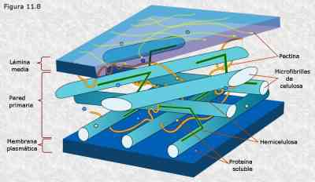
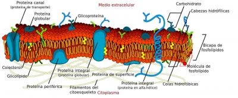

Pared celular
 Se trata de una estructura compleja y fundamental para la bacteria, ya que su rigidez es la que le da
forma
a cada bacteria, además de protegerla de los cambios de la presión osmótica del medio que la
rodea.
Además, es el lugar donde se localizan los numerosos determinantes antigénicos que permiten diferenciar
a
una bacteria de otra. También se encuentran en ella la endotoxina de algunos grupos.
La pared celular se construye mediante una serie de etapas enzimáticas en las que participan unas 30
enzimas
por lo menos. Está formada por peptidoglicanos (mureína o glucopeptido) y su espesor depende de si se
trata
de bacterias grampositivas o gramnegativas: en el caso de las bacterias grampositivas, la pared celular
es
una capa sólida de entre 50 y 100 moléculas de peptidoglicanos.
En cambio, en las bacterias gramnegativas la pared celular apenas tiene una o dos moléculas de espesor.
También participa en la división celular.
Membrana citoplasmática
 Se trata de una barrera osmótica selectiva y activa que contiene sistemas de transporte para los solutos
y
regula la salida hacia el exterior de otros productos celulares.
Además, es el sitio de acción de detergentes y antibióticos polipeptídicos como la polimixina. En el
caso de
las bacterias gramnegativas, existen dos membranas, una interna y otra externa; por su lado, las
grampositivas poseen sólo una membrana interna.
La membrana citoplasmática está formada por fosfolípidos y proteínas y, a diferencia de las eucariotas,
no
contiene esteroles, excepto el mycoplasma. También se encuentran en ella las enzimas del transporte
electrónico que producen energía; y se sintetizan los componentes de la cápsula y la pared celular.
Citoplasma
Es la parte líquida del interior de la célula bacteriana. Está formado por un 85% de agua y contiene los ribosomas y el cromosoma de la bacteria.
Ribosomas
Están compuestos por ARN ribosómico. Son el lugar donde realizan su acción numerosos antibióticos como los amino glucósidos, tetraciclinas, cloranfenicol, macrólidos y lincosamidas.
Cromosoma bacteriano o nucleído
Es el equivalente al núcleo de las células eucariotas, aunque no posee una membrana nuclear, de ahí el
término “nucleído”.
Está formado por un único filamento de ADN apelotonado o muy enrollado que confiere sus peculiaridades
genéticas a la bacteria. Su función es la de regular la síntesis proteica.
Cápsula
Es una estructura polisacárido que envuelve a la bacteria y la protege de la fagocitosis, al mismo tiempo que facilita la invasión y permite diferenciar los tipos serológicos.
Flagelos
Son estructuras proteicas helicoidales y locomotores que permiten la movilidad de las bacterias. Según su posición, distinguimos bacterias: monotricas, con un solo flagelo en uno de los extremos (o ambos); logotricas, poseen varios flagelos en sus extremos; y peritricas, las que poseen flagelos en toda su superficie.